Open-access health datasets for OLS linear regression practice
Curated teaching datasets for ordinary least squares. All 25 datasets are downloaded (or pulled from permissive R packages), column-renamed to tidy snake_case, saved as CSVs, and given a quick-view thumbnail.
All processing lives in datasets_staging/scripts/prepare_datasets.R. Raw source files are in datasets_staging/raw/, cleaned CSVs in datasets_staging/cleaned/, and thumbnails in datasets_staging/thumbnails/.
Summary tables
The 25 datasets fall into two natural groups. Study datasets are the raw data from a specific published research paper — the numbers you find in the resource correspond directly to the numbers analysed in that paper. Teaching datasets were curated, sampled, or aggregated specifically for a textbook or teaching package; they come from real public sources (NHANES, ACS, NCHS, UN, NLSY) but the rows/columns you see were selected for pedagogical convenience, not to reproduce a specific paper.
A. Datasets from published research studies
| # | Dataset | N × p | Outcome ~ main predictor | Quick view | R load | Cleaned CSV | License |
|---|---|---|---|---|---|---|---|
| 1 | Body fat — 252 men (Johnson/Penrose) | 252 × 19 | bodyfat_brozek ~ abdomen_cm |
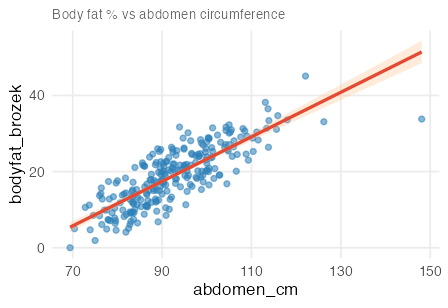 |
read.csv("cleaned/01_bodyfat_johnson.csv") |
01_bodyfat_johnson.csv | Free, non-commercial (Fisher/JSE) |
| 2 | Diabetes progression (Efron et al.) | 442 × 11 | progression ~ bmi |
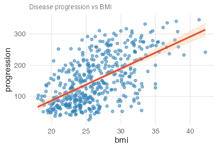 |
read.csv("cleaned/02_diabetes_efron.csv") |
02_diabetes_efron.csv | Public (scikit-learn default) |
| 3 | FEV lung function (Kahn/Tager) | 654 × 5 | fev_l ~ height_in |
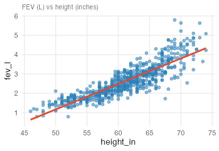 |
read.csv("cleaned/03_fev_kahn.csv") |
03_fev_kahn.csv | Free, non-commercial (JSE) |
| 4 | Body fat — Spanish adults (Fuster-Parra) | 3200 × 5 | bodyfat_pct ~ bmi |
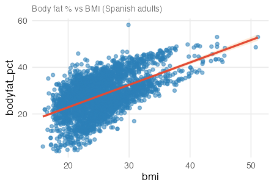 |
read.csv("cleaned/04_bodyfat_spanish.csv") |
04_bodyfat_spanish.csv | CC-BY 4.0 (PLOS ONE) |
| 5 | Birthweight from ultrasound (Secher) | 107 × 4 | birthweight_g ~ abdominal_diameter_mm |
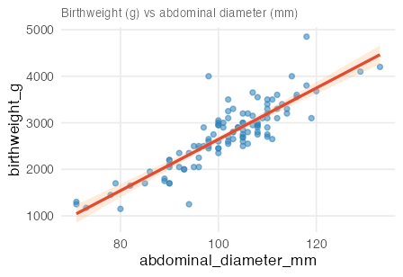 |
read.csv("cleaned/05_birthweight_secher.csv") |
05_birthweight_secher.csv | Textbook supplement (no explicit licence) |
| 6 | Peak power & tibial bone strength (Denys) | 142 × 8 | bsi_compression ~ peak_power_w |
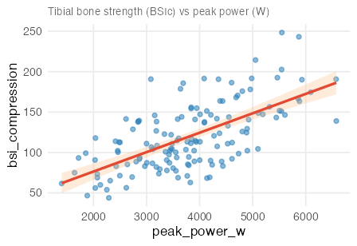 |
read.csv("cleaned/06_peak_power_bone.csv") |
06_peak_power_bone.csv | CC0 1.0 (Dryad) |
| 7 | Alcohol metabolism & sex (Frezza, NEJM) | 32 × 5 | first_pass_metabolism ~ gastric_ad_activity × sex |
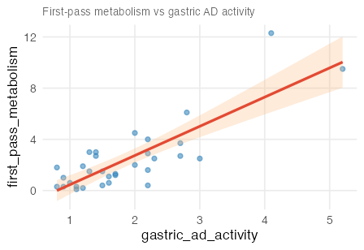 |
data(case1101, package = "Sleuth3") |
07_alcohol_metabolism.csv | GPL-2 (Sleuth3) |
| 8 | Cystic fibrosis lung function (O’Neill) | 25 × 10 | pe_max ~ weight_kg |
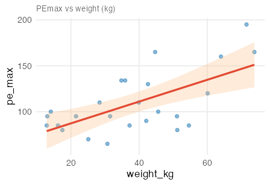 |
data(cystfibr, package = "ISwR") |
08_cystic_fibrosis.csv | GPL-2 (ISwR) |
| 9 | DXA body fat — German women (Garcia) | 71 × 10 | dxa_fat_kg ~ waist_cm |
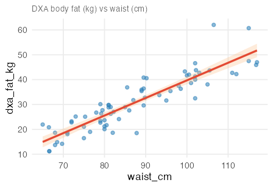 |
data(bodyfat, package = "TH.data") |
09_bodyfat_german.csv | GPL-2 (TH.data) |
| 10 | Birth weight — Baystate Medical (Hosmer) | 189 × 10 | birthweight_g ~ mother_weight_lb |
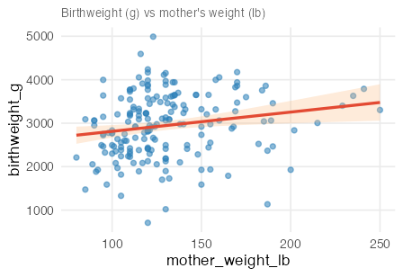 |
data(birthwt, package = "MASS") |
10_birthweight_baystate.csv | GPL-2 (MASS) |
| 11 | HIV & 6-minute walk distance (Frasca) | 427 × 23 | six_min_walk_m ~ age_yrs |
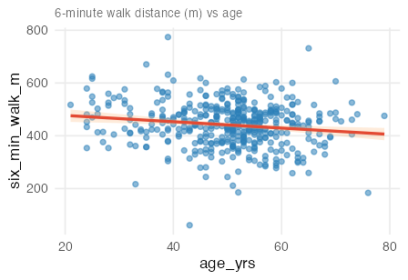 |
read.csv("cleaned/11_hiv_6mwt.csv") |
11_hiv_6mwt.csv | CC0 1.0 (Dryad) |
| 12 | Serum GGT & atherosclerosis (BMJ Open) | 912 × 25 | pwv_max ~ log2_ggt |
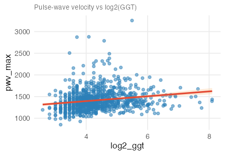 |
read.csv("cleaned/12_ggt_atherosclerosis.csv") |
12_ggt_atherosclerosis.csv | CC0 1.0 (Zenodo) |
| 13 | CV risk factors & CIMT in RA (Ozen) | 470 × 48 | cimt_total ~ age_yrs |
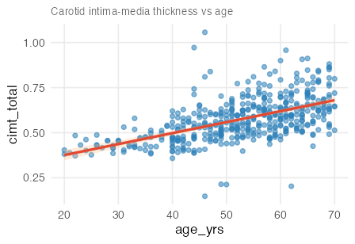 |
read.csv("cleaned/13_cimt_ra.csv") |
13_cimt_ra.csv | CC0 1.0 (Zenodo) |
| 14 | Oral contraceptive use & prostate cancer (Margel) | 167 × 9 | prostate_cancer_incidence ~ pill_use_pct |
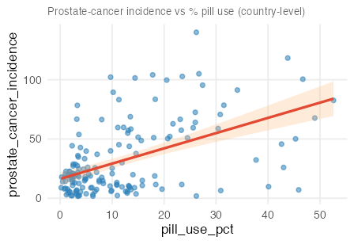 |
read.csv("cleaned/14_oc_prostate.csv") |
14_oc_prostate.csv | CC0 1.0 (Dryad) |
| 15 | Patient activation for self-management (Bos-Touwen) | 1154 × 94 | pam_activation_score ~ sf12_mental |
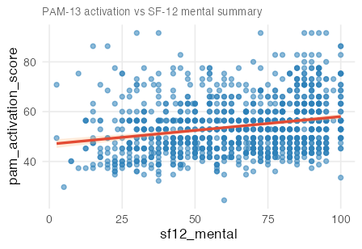 |
read.csv("cleaned/15_pam13.csv") |
15_pam13.csv | CC0 1.0 (Dryad) |
| 16 | Medical student resilience & QoL (Tempski) | 1350 × 22 | whoqol_psychological ~ resilience_score |
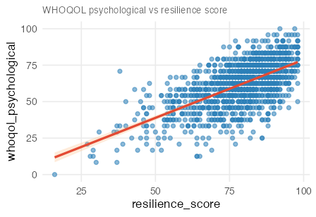 |
read.csv("cleaned/16_med_student_qol.csv") |
16_med_student_qol.csv | CC0 1.0 (Dryad) |
| 17 | Depression & anxiety in older adults (Shenzhen) | 5331 × 24 | phq9_depression_score ~ uls_loneliness_score |
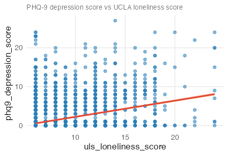 |
read.csv("cleaned/17_depression_anxiety.csv") |
17_depression_anxiety.csv | CC0 1.0 (Dryad) |
| 18 | PREVEND cognitive function & aging (NL cohort) | 500 × 31 | rfft ~ age_yrs |
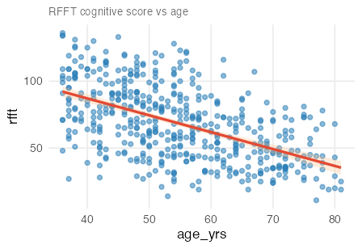 |
data(prevend.samp, package = "oibiostat") |
18_prevend.csv | No explicit licence (oibiostat) |
| 19 | FAMuSS — ACTN3 genotype & arm-strength gain | 595 × 9 | ndrm_change_pct ~ age_yrs |
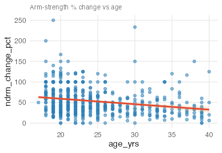 |
data(famuss, package = "oibiostat") |
19_famuss.csv | No explicit licence (oibiostat) |
| 25 | Boston housing — NOx air pollution (Harrison & Rubinfeld) | 506 × 13 | nox_ppm_x10m ~ distance_to_employment |
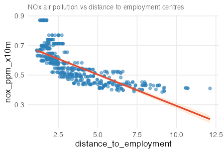 |
data(Boston, package = "ISLR2") |
25_boston.csv | GPL-2 (ISLR2) |
B. Teaching-oriented datasets (curated / sampled for pedagogy)
| # | Dataset | N × p | Outcome ~ main predictor | Quick view | R load | Cleaned CSV | License |
|---|---|---|---|---|---|---|---|
| 20 | kidiq — child test score & mother’s IQ (ROS) | 434 × 5 | kid_score ~ mom_iq |
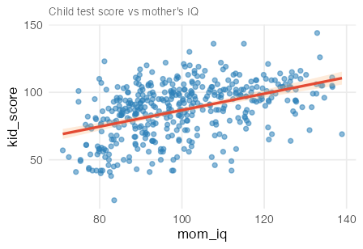 |
data(kidiq, package = "rosdata") |
20_kidiq.csv | BSD-3 code; data licence unstated |
| 21 | births14 — US NCHS 2014 sample (openintro) | 1000 × 13 | birthweight_lb ~ gestation_weeks |
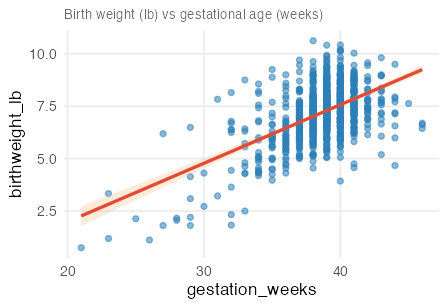 |
data(births14, package = "openintro") |
21_births14.csv | CC-BY-SA 4.0 (openintro) |
| 22 | UN member states 2024 — global health (moderndive) | 193 × 13 | life_expectancy_yrs ~ hdi |
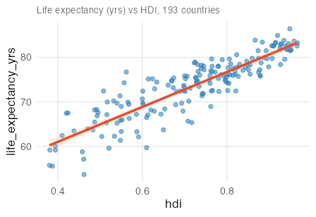 |
data(un_member_states_2024, package = "moderndive") |
22_un_member_states_2024.csv | MIT (moderndive) |
| 23 | NHANES adult sample 2009–12 (oibiostat) | 135 × 31 | systolic_bp ~ age_yrs |
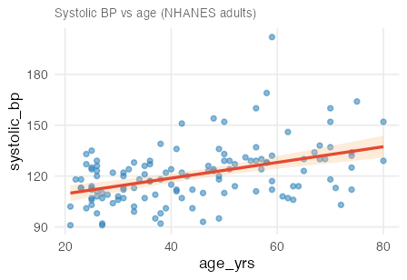 |
data(nhanes.samp.adult, package = "oibiostat") |
23_nhanes_adult.csv | NHANES public domain; oibiostat sample has no explicit licence |
| 24 | US county-level socio-economic data (usdata) | 3142 × 15 | unemployment_rate ~ poverty_rate |
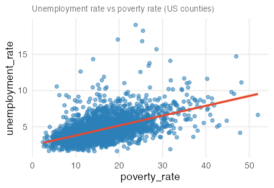 |
data(county, package = "usdata") |
24_county.csv | GPL-3 (usdata); Census/ACS public domain |
Load-everything snippet
library(readr)
bodyfat_johnson <- read_csv("cleaned/01_bodyfat_johnson.csv")
diabetes_efron <- read_csv("cleaned/02_diabetes_efron.csv")
fev_kahn <- read_csv("cleaned/03_fev_kahn.csv")
bodyfat_spanish <- read_csv("cleaned/04_bodyfat_spanish.csv")
birthweight_secher <- read_csv("cleaned/05_birthweight_secher.csv")
peak_power_bone <- read_csv("cleaned/06_peak_power_bone.csv")
data(case1101, package = "Sleuth3"); alcohol_metabolism <- case1101
data(cystfibr, package = "ISwR"); cystic_fibrosis <- cystfibr
data(bodyfat, package = "TH.data"); bodyfat_german <- bodyfat
data(birthwt, package = "MASS"); birthweight_baystate <- birthwt
hiv_6mwt <- read_csv("cleaned/11_hiv_6mwt.csv")
ggt_atherosclerosis <- read_csv("cleaned/12_ggt_atherosclerosis.csv")
cimt_ra <- read_csv("cleaned/13_cimt_ra.csv")
oc_prostate <- read_csv("cleaned/14_oc_prostate.csv")
pam13 <- read_csv("cleaned/15_pam13.csv")
med_student_qol <- read_csv("cleaned/16_med_student_qol.csv")
depression_anxiety <- read_csv("cleaned/17_depression_anxiety.csv")
data(prevend.samp, package = "oibiostat"); prevend <- prevend.samp
data(famuss, package = "oibiostat"); famuss_df <- famuss
data(kidiq, package = "rosdata"); kidiq_df <- kidiq
data(births14, package = "openintro"); births14_df <- births14
data(un_member_states_2024, package = "moderndive"); un_member_states <- un_member_states_2024
data(nhanes.samp.adult, package = "oibiostat"); nhanes_adult <- nhanes.samp.adult
data(county, package = "usdata"); county_df <- county
data(Boston, package = "ISLR2"); boston_df <- BostonDataset details
Each section below lists the cleaned columns, primary paper/source, and the outcome + predictor used in the thumbnail. Column names in all cleaned CSVs use snake_case. Categorical variables are stored as factors with readable labels (e.g. sex = male / female) whenever the original coding was numeric.
1 — Body fat, 252 men (Johnson/Penrose, JSE 1996)
- N × p: 252 × 19
- Paper: Johnson 1996, DOI 10.1080/10691898.1996.11910505
- Original link: fat.dat.txt (docs)
- License: free for non-commercial use (Dr. A. Garth Fisher, BYU)
- Cleaned CSV: 01_bodyfat_johnson.csv
- Columns:
case, bodyfat_brozek, bodyfat_siri, density, age, weight_lb, height_in, adiposity_bmi, fat_free_wt_lb, neck_cm, chest_cm, abdomen_cm, hip_cm, thigh_cm, knee_cm, ankle_cm, biceps_cm, forearm_cm, wrist_cm - Notes: classic textbook OLS / variable-selection example. Known typos for cases 42, 48, 76, 96, 182.
2 — Diabetes progression (Efron et al., Annals of Stats 2004)
- N × p: 442 × 11
- Paper: Efron et al. 2004, DOI 10.1214/009053604000000067
- Original link: diabetes.tab.txt
- License: public (scikit-learn ships it as its default regression example)
- Cleaned CSV: 02_diabetes_efron.csv
- Columns:
age, sex, bmi, bp_mean, total_cholesterol, ldl, hdl, tc_hdl_ratio, log_serum_triglycerides, glucose, progression - Notes: full-rank OLS reaches R² ≈ 0.51. Column renames mirror the LARS paper’s
S1…S6.
3 — FEV lung function in youths (Kahn/Tager, JSE 2005)
- N × p: 654 × 5
- Paper: Kahn 2005, DOI 10.1080/10691898.2005.11910559
- Original link: fev.dat.txt (docs)
- License: free for non-commercial use (JSE)
- Cleaned CSV: 03_fev_kahn.csv
- Columns:
age_yrs, fev_l, height_in, sex, smoke - Notes: canonical confounding demo — naive smoker vs non-smoker comparison reverses sign once you adjust for age.
4 — Body fat, Spanish adults (Fuster-Parra et al., PLOS ONE 2015)
- N × p: 3,200 × 5
- Paper: Fuster-Parra et al. 2015, DOI 10.1371/journal.pone.0122291
- Original link: PLOS supplementary S1 (despite the
.xlsxextension the file is a quoted text table) - License: CC-BY 4.0 (PLOS ONE supplements)
- Cleaned CSV: 04_bodyfat_spanish.csv
- Columns:
age, sex, bai, bmi, bodyfat_pct - Notes: paper explicitly uses OLS with asymptotic SEs. Gender originally coded 1 = male, 2 = female — decoded to a factor.
5 — Birthweight from ultrasound (Secher, via Ekstrøm & Sørensen 2015)
- N × p: 107 × 4
- Source: Ekstrøm CT & Sørensen H, Introduction to Statistical Data Analysis for the Life Sciences (2015), textbook supplement
- Original link: BirthWeight.csv (semicolon separator)
- License: textbook supplement, publicly downloadable
- Cleaned CSV: 05_birthweight_secher.csv
- Columns:
id, biparietal_diameter_mm, abdominal_diameter_mm, birthweight_g - Notes: ideal first OLS example — two predictors only, clean linear relationship.
6 — Peak power & tibial bone strength (Denys & Yingling, MSSE 2022)
- N × p: 142 × 8 (79 female, 63 male)
- Paper: Denys et al., Med Sci Sports Exerc 2022, PMC9186462
- Dryad: 10.5061/dryad.0k6djhb14
- License: CC0 1.0 (Dryad)
- Cleaned CSV: 06_peak_power_bone.csv
- Columns:
subject_id, sex, age_bin, body_mass_kg, peak_power_w, relative_peak_power, bsi_compression, polar_strength_strain_index - Notes: hierarchical OLS testing whether peak power (estimated from vertical-jump height via Sayer’s equation) adds to body-mass prediction of tibial bone strength (
bsi_compressionfor trabecular /polar_strength_strain_indexfor cortical). Gender decoded from 1 = female, 2 = male;age_binkept as 1–6 (decade-wise bins from the original file).
7 — Alcohol metabolism & sex (Frezza et al., NEJM 1990)
- N × p: 32 × 5
- Paper: Frezza et al. 1990, DOI 10.1056/NEJM199001113220205
- Source:
Sleuth3::case1101 - License: GPL-2 (via Sleuth3)
- Load:
data(case1101, package = "Sleuth3") - Cleaned CSV: 07_alcohol_metabolism.csv
- Columns:
subject, first_pass_metabolism, gastric_ad_activity, sex, alcohol_status - Notes: landmark NEJM study — great for teaching interactions (sex × gastric activity).
8 — Cystic fibrosis lung function (O’Neill 1983)
- N × p: 25 × 10
- Paper: O’Neill et al. (1983), American Review of Respiratory Disease, 128:1051.
- Source:
ISwR::cystfibr - License: GPL-2 (via ISwR)
- Load:
data(cystfibr, package = "ISwR") - Cleaned CSV: 08_cystic_fibrosis.csv
- Columns:
age_yrs, sex, height_cm, weight_kg, bmp_pct, fev1_pct, residual_volume, functional_residual_capacity, total_lung_capacity, pe_max - Notes: small-sample OLS with 9 clinical predictors — good for stepwise selection / multicollinearity discussion.
9 — DXA body fat, German women (Garcia et al., Obesity 2005)
- N × p: 71 × 10
- Paper: Garcia et al. 2005, DOI 10.1038/oby.2005.67
- Source:
TH.data::bodyfat - License: GPL-2 (via TH.data)
- Load:
data(bodyfat, package = "TH.data") - Cleaned CSV: 09_bodyfat_german.csv
- Columns:
age_yrs, dxa_fat_kg, waist_cm, hip_cm, elbow_breadth_cm, knee_breadth_cm, anthro_3a, anthro_3b, anthro_3c, anthro_4 - Notes: DXA is the gold-standard outcome. Paper uses backward-elimination OLS.
10 — Birth weight, Baystate Medical (Hosmer & Lemeshow 1989)
- N × p: 189 × 10
- Source reference: Hosmer DW & Lemeshow S, Applied Logistic Regression (1989)
- Source:
MASS::birthwt(also mirrored as Rdatasets CSV) - License: GPL-2 (via MASS)
- Load:
data(birthwt, package = "MASS") - Cleaned CSV: 10_birthweight_baystate.csv
- Columns:
birthweight_g, low_birthweight, mother_age_yrs, mother_weight_lb, race, smoked_during_pregnancy, previous_premature_labours, history_hypertension, uterine_irritability, physician_visits_1st_trimester - Notes: classic logistic-regression dataset but
birthweight_gis routinely re-used for OLS teaching. Race decoded from 1/2/3 towhite/black/other; binary flags converted tological.
11 — HIV & 6-minute walk test (Frasca et al., PLOS ONE 2019)
- N × p: 427 × 23
- Paper: Frasca et al. 2019, DOI 10.1371/journal.pone.0212975
- Dryad: 10.5061/dryad.nf63rb8
- License: CC0 1.0 (Dryad)
- Cleaned CSV: 11_hiv_6mwt.csv
- Columns:
hiv_status, age_yrs, sex, cd4_count, pack_years, on_antiretroviral, systolic_bp_pre, diastolic_bp_pre, six_min_walk_m, mmrc_dyspnoea, sgrq_symptoms, sgrq_activity, sgrq_impacts, sgrq_total, haemoglobin, viral_load_detectable, post_fvc_pct_pred, dlco_pct_pred, post_fev1_pct_pred, post_fev1_fvc_ratio, viral_load_copies, smoking_status, drug_use - Notes: continuous outcome (distance walked in 6 minutes); works as a single-predictor OLS demo and as a richer multivariable model controlling for HIV status + lung function.
12 — Serum γ-GTP & atherosclerosis (BMJ Open 2014)
- N × p: 912 × 25
- Paper: BMJ Open 2014
- Zenodo: record 4946112
- License: CC0 1.0 (Zenodo)
- Cleaned CSV: 12_ggt_atherosclerosis.csv
- Columns:
id, age, bmi, systolic_bp, diastolic_bp, ast, alt, ggt, log2_ggt, fasting_glucose, uric_acid, total_cholesterol, triglycerides, hdl_cholesterol, ldl_cholesterol, current_smoker, ex_smoker, alcohol_use, exercise, fatty_liver, egfr, post_menopausal, abi_max, pwv_max, sex - Notes: cross-sectional health-check data; many plausible continuous outcomes (PWVmax, ABImax, cIMT surrogates).
13 — CV risk factors & carotid intima-media thickness in RA (PLOS ONE 2015)
- N × p: 470 × 48
- Paper: Ozen et al., PLOS ONE 2015
- Zenodo: record 4961200
- License: CC0 1.0 (Zenodo)
- Cleaned CSV: 13_cimt_ra.csv
- Columns (48):
id, sex, age_yrs, bmi, waist_cm, systolic_bp, diastolic_bp, total_cholesterol, hdl_cholesterol, ldl_cholesterol, triglycerides, crp, smoking, hypertension, statins, ra, das28_bse, das28_crp, cimt_total, anti_ccp, apo_b_vnumber, plaques, ra_4_groups, ra_healthy, ra_ht_hc, ra_ldl_cat, hx_hypertension, antihypertensives, hx_dyslipidaemia, height_cm, weight_kg, prednisone, glucose, apo_a, apo_b, cv_risk, rheumatoid_factor, erosive_ra, ra_disease_duration, ldl_cutoff_2_5, nsaid, hydroxychloroquine, sulfasalazine, methotrexate, leflunomide, anti_tnf, other_biologicals, azathioprine - Notes: SPSS
.savfile —haven::read_sav()+zap_labels()gives a clean tibble. Mixed Dutch/English column names cleaned up.
14 — Oral-contraceptive use & prostate cancer (Margel & Fleshner, BMJ Open 2011)
- N × p: 167 × 9
- Paper: Margel & Fleshner, BMJ Open 2011
- Dryad: 10.5061/dryad.ff6bd0pq
- License: CC0 1.0 (Dryad)
- Cleaned CSV: 14_oc_prostate.csv
- Columns:
country, gdp_usd, prostate_cancer_incidence, prostate_cancer_mortality, pill_use_pct, iud_use_pct, condom_use_pct, vaginal_barrier_use_pct, europe - Notes: ecological (country-level) data — one row per country. Several numeric columns arrived as strings in the original
.xlsand are coerced to numeric on import.
15 — Patient activation for self-management (Bos-Touwen et al., PLOS ONE 2015)
- N × p: 1,154 × 94
- Paper: Bos-Touwen et al., PLOS ONE 2015
- Dryad: 10.5061/dryad.jg413 (SPSS
.sav+ README) - License: CC0 1.0 (Dryad)
- Cleaned CSV: 15_pam13.csv
- Outcome of interest:
pam_activation_score(continuous 0–100 PAM-13 score). Alsopam_level1–4. - Key predictors:
sf12_physical,sf12_mental,hads_depression,hads_anxiety,ipq_total,support_total,charlson_index,age_yrs,bmi,disease,education_level,financial_distress. - All 94 columns: identifier/demographics first —
subject_id, sex, age_yrs, bmi, height_cm, weight_kg, education_level, living_situation, financial_distress, smoking_code, disease, disease_severity, disease_duration_yrs, n_comorbidities, charlson_index— then derived scores (pam_activation_score, pam_level, sf12_total, sf12_physical, sf12_mental, hads_depression, hads_anxiety, ipq_total, support_family, support_friends, support_significant_other, support_total, egfr, egfr_ml_min, nyha, nyha_class, gold_stage, ethnicity_code, care_allowance, dm_medication), then the raw item-level scalespam1…pam13, sf1…sf12, hads1…hads14, ipq1…ipq8, ssup1…ssup12. - Notes: multiple linear regression on PAM-13 as outcome. The item-level columns let you reconstruct subscales or play with item-response modelling.
16 — Medical student resilience & QoL (Tempski et al., PLOS ONE 2015)
- N × p: 1,350 × 22
- Paper: Tempski et al., PLOS ONE 2015
- Dryad: 10.5061/dryad.63r07
- License: CC0 1.0 (Dryad)
- Cleaned CSV: 16_med_student_qol.csv
- Columns:
subject_id, sex, group, overall_qol, medical_school_qol, whoqol_physical, whoqol_psychological, whoqol_social, whoqol_environment, dreem_learning, dreem_teachers, dreem_academic_self_perception, dreem_atmosphere, dreem_social_self_perception, dreem_global, resilience_score, bdi, age_yrs, school_legal_status, school_location, state_anxiety, trait_anxiety - Notes: the original Excel file has a title banner on row 1 and real headers on row 2 — the script reads with
skip = 1. Outcome is any of the WHOQOL/DREEM subscales; predictors includeresilience_score,bdi,state_anxiety,trait_anxiety.
17 — Depression & anxiety in older adults, Shenzhen (BMJ Open 2024)
- N × p: 5,331 × 24
- Paper: BMJ Open 2024, article e077078
- Dryad: 10.5061/dryad.bnzs7h4j1
- License: CC0 1.0 (Dryad)
- Cleaned CSV: 17_depression_anxiety.csv
- Columns:
subject_code, education_level, marital_status, has_chronic_disease, income_level, drinking_status, smoking_status, self_rated_health, sleep_hours, phq9_depression_score, gad7_anxiety_score, isi_insomnia_score, ad8_cognitive_score, csid_cognitive_score, uls_loneliness_score, depressive_symptoms, anxiety_symptoms, mild_cognitive_impairment, early_dementia, insomnia, marital_status_code, has_chronic_disease_code, drinking_code, smoking_code - Notes: all the categorical codes documented in the Dryad README are decoded here into labelled factors (education 1–5 →
primary_or_below…master_plus, drinking 1–3 →non_drinker / ex_drinker / current_drinker, etc.). Binary symptom flags are stored aslogical. The original numeric codes are retained as*_codecolumns so anyone wanting to reproduce the paper’s exact regressions can still use them.
18 — PREVEND cognitive function & aging (Dutch cohort, via oibiostat)
- N × p: 500 × 31 (random sub-sample of the 4,095-participant PREVEND cohort)
- Study: Prevention of REnal and Vascular ENd-stage Disease (PREVEND), University Medical Center Groningen. See the oibiostat data docs and Joosten et al. 2014 (PMC4086841).
- Source:
oibiostat::prevend.samp - License:
oibiostathas no explicit licence (its DESCRIPTION says “No licensing yet”); the underlying PREVEND data are governed by UMC Groningen. Redistribution is legally gray — intended for teaching alongside the OpenIntro Biostatistics textbook. - Load:
data(prevend.samp, package = "oibiostat") - Cleaned CSV: 18_prevend.csv
- Columns:
subject_id, sex, age_yrs, ethnicity, education, rfft, bmi, systolic_bp, diastolic_bp, mean_arterial_pressure, egfr, total_cholesterol, hdl_cholesterol, cvd, diabetes, hypertension, smoking_status, statin_user, framingham_risk_score, vat, albuminuria_v1, albuminuria_v2, statin_solubility_code, days_on_statin, years_on_statin, defined_daily_dose, propensity_score, propensity_quintile, genetic_risk_score, match_id_1, match_id_2 - Notes:
rfft= Ruff Figural Fluency Test score, an executive-function measure. Teaching uses include simple OLS (rfft ~ age_yrs), education as a confounder (rfft ~ age_yrs + education), and statin-use effects on cognition. Integer code columns (gender_code,ethnicity_code,education_code,smoking_code) were decoded into the factorssex,ethnicity,education,smoking_status; binary flags are stored aslogical.
19 — FAMuSS — ACTN3 genotype & resistance training (via oibiostat)
- N × p: 595 × 9
- Study: Functional SNPs Associated with Muscle Size and Strength (FAMuSS), University of Massachusetts. Classic genetic-epidemiology training dataset; see Thompson et al. 2004 (DOI 10.1249/01.mss.0000142301.87942.76).
- Source:
oibiostat::famuss - License:
oibiostathas no explicit licence — see row 18 note. - Load:
data(famuss, package = "oibiostat") - Cleaned CSV: 19_famuss.csv
- Columns:
ndrm_change_pct, drm_change_pct, sex, age_yrs, race, height_in, weight_lb, actn3_genotype, bmi - Notes: outcome is % change in non-dominant arm strength after 12 weeks of supervised resistance training. Great for teaching categorical predictors (
actn3_genotype= CC / CT / TT) + confounders (sex,age_yrs,race,bmi).
20 — kidiq — child test score & mother’s IQ (Regression and Other Stories)
- N × p: 434 × 5
- Source: Gelman, Hill & Vehtari, Regression and Other Stories (2020) — kidiq dataset
- Package:
rosdata::kidiq(from avehtari/ROS-Examples, install viaremotes::install_github("avehtari/ROS-Examples", subdir = "rpackage")) - License:
rosdataDESCRIPTION says “Code BSD-3 + for data see each data source directory” — but those directories don’t contain data licences. Underlying NLSY data are public. Redistribution is legally gray outside of teaching contexts. - Load:
data(kidiq, package = "rosdata") - Cleaned CSV: 20_kidiq.csv
- Columns:
kid_score, mom_iq, mom_high_school, mom_work, mom_age_yrs - Notes: canonical first-week multiple-regression example —
kid_score ~ mom_iq + mom_high_schoolwith an interaction term demonstrates how education modifies the IQ–score slope.
21 — births14 — US NCHS 2014 live births (via openintro)
- N × p: 1,000 × 13 (random sample of US live births in 2014)
- Source: US CDC National Center for Health Statistics, 2014 natality file; redistributed in
openintro::births14. - License: CC-BY-SA 4.0 (via openintro textbook)
- Load:
data(births14, package = "openintro") - Cleaned CSV: 21_births14.csv
- Columns:
father_age_yrs, mother_age_yrs, mother_maturity, gestation_weeks, premature, prenatal_visits, weight_gain_lb, birthweight_lb, low_birthweight, sex, smoking_habit, marital_status, white_mother - Notes: much larger and more recent than the other two birth-weight datasets (rows 5 and 10). Rich multivariable OLS:
birthweight_lb ~ gestation_weeks + mother_age_yrs + prenatal_visits + weight_gain_lb + smoking_habit. Binary outcomepremature/low_birthweightare also useful contrasts for logistic regression.
22 — UN member states 2024 — global-health indicators (via moderndive)
- N × p: 193 × 13 (one row per UN member state)
- Source: compiled by the ModernDive authors from UN, World Bank, UNDP and WHO data; shipped in the development version of
moderndive(≥ 0.7.0). - License: MIT (redistributed via
moderndive); underlying data: UN / World Bank / UNDP (mostly CC-BY). - Raw source:
datasets_staging/raw/18_un_member_states/un_member_states_2024.rda(copied from the moderndive GitHub repo, sincemoderndive0.7+ is not yet installable on older R). - Load:
data(un_member_states_2024, package = "moderndive")(needsmoderndive≥ 0.7.0) - Cleaned CSV: 22_un_member_states_2024.csv
- Columns:
country, iso_code, continent, region, income_group, population, area_km2, gdp_per_capita_usd, obesity_rate_2016_pct, obesity_rate_2024_pct, life_expectancy_yrs, fertility_rate, hdi - Notes: ecological / population-level. Classic teaching examples:
life_expectancy_yrs ~ hdi,life_expectancy_yrs ~ gdp_per_capita_usd + continent,fertility_rate_2022 ~ life_expectancy_yrs. Drops the Olympic-medal and capital-city columns that the upstream file carries — those aren’t health-relevant.
23 — NHANES adult sample, 2009–12 (via oibiostat)
- N × p: 135 × 31 (random sample of US adults aged ≥ 20)
- Source: US CDC National Health and Nutrition Examination Survey, cycles 2009–2010 and 2011–2012; sample redistributed in
oibiostat::nhanes.samp.adult. - License: The underlying NHANES data is US-government public domain — no restrictions. The specific 135-row sample in
oibiostathas no explicit licence (see row 18 note); if you need a clean legal basis for redistribution, re-sample directly from theNHANESCRAN package (which ships the full public-domain data) or from the CDC. - Load:
data(nhanes.samp.adult, package = "oibiostat") - Cleaned CSV: 23_nhanes_adult.csv
- Columns:
subject_id, survey_year, sex, age_yrs, age_decade, race, education_level, marital_status, hh_income_midpoint, poverty_ratio, home_ownership, work_status, weight_kg, height_cm, bmi, pulse, systolic_bp, diastolic_bp, direct_hdl, total_cholesterol, diabetes, general_health, phys_health_bad_days, ment_health_bad_days, sleep_hours, sleep_trouble, phys_active, phys_active_days, alcohol_days_year, smoked_100, smoke_now - Notes: we keep the OLS-useful columns and drop reproductive/sexual-behaviour and urine-flow columns from the upstream
oibiostatfile. Obvious teaching targets:systolic_bp ~ age_yrs + bmi + poverty_ratio,bmi ~ phys_active_days + age_yrs,total_cholesterol ~ age_yrs + bmi + smoked_100.
24 — US county-level socio-economic data (via usdata)
- N × p: 3,142 × 15 (one row per US county)
- Source: compiled by the OpenIntro / usdata authors from the US Census ACS 5-year estimates and related public sources; see
?usdata::county. - License:
usdatapkg is GPL-3; underlying US Census/ACS data is public domain. - Load:
data(county, package = "usdata") - Cleaned CSV: 24_county.csv
- Columns:
county_name, state, population_2000, population_2010, population_2017, population_change_pct, poverty_rate, homeownership_rate, multi_unit_housing_pct, unemployment_rate, metro, median_edu, per_capita_income, median_hh_income, smoking_ban - Notes: ecological (population-level) — excellent for teaching health-equity framings where the county is the unit of analysis. Useful models:
unemployment_rate ~ poverty_rate + median_edu + metro,median_hh_income ~ median_edu + metro + state. Category-richmedian_edu(below_hs/hs_diploma/some_college/bachelors) shows how OLS treats an ordered factor.
25 — Boston housing — NOx air pollution (via ISLR2)
- N × p: 506 × 13 (one row per census tract in the Boston SMSA, 1970)
- Paper: Harrison & Rubinfeld 1978, Journal of Environmental Economics and Management — “Hedonic housing prices and the demand for clean air”.
- Source:
ISLR2::Boston - License: GPL-2 (via
ISLR2) - Load:
data(Boston, package = "ISLR2") - Cleaned CSV: 25_boston.csv
- Columns:
per_capita_crime_rate, large_lot_residential_pct, non_retail_business_pct, near_charles_river, nox_ppm_x10m, avg_rooms_per_dwelling, pct_built_before_1940, distance_to_employment, highway_access_idx, property_tax_per_10k, pupil_teacher_ratio, lower_status_pct, median_home_value_usd_1k - Notes: borderline public-health — included for the environmental-health framing.
nox_ppm_x10m(nitric-oxide concentration, ppm × 10⁷) is a cardiopulmonary-relevant air-pollution exposure. Teaching example:nox_ppm_x10m ~ distance_to_employment + highway_access_idx + non_retail_business_pct. The classic ISL example usingmedv(median home value) as outcome is also available, if you want to frame it as a disadvantage/SDoH proxy instead of as pure economics.
License check for the “can we ship it in a package?” question
| # | Redistribute in an R data package? |
|---|---|
| 1 | ⚠️ Non-commercial only. Dr. Fisher’s JSE permission statement says “freely distribute and use for non-commercial purposes”. Incompatible with CRAN / GPL / MIT (all of which permit commercial use). |
| 2 | ✅ Public. Redistributed by scikit-learn and by several R packages. |
| 3 | ⚠️ Non-commercial only, same JSE terms as row 1. |
| 4 | ✅ CC-BY 4.0 — redistributable with attribution. |
| 5 | ⚠️ Textbook supplement, no explicit licence — safest is to link to the file rather than re-host, or email Ekstrøm/Sørensen. |
| 6 | ✅ CC0 1.0 (Dryad). |
| 7 | ✅ Already in Sleuth3 (GPL-2). |
| 8 | ✅ Already in ISwR (GPL-2). |
| 9 | ✅ Already in TH.data (GPL-2). |
| 10 | ✅ Already in MASS (GPL-2/GPL-3). |
| 11 | ✅ CC0 1.0 (Dryad). |
| 12 | ✅ CC0 1.0 (Zenodo). |
| 13 | ✅ CC0 1.0 (Zenodo). |
| 14 | ✅ CC0 1.0 (Dryad). |
| 15 | ✅ CC0 1.0 (Dryad). |
| 16 | ✅ CC0 1.0 (Dryad). |
| 17 | ✅ CC0 1.0 (Dryad). |
| 18 | ⚠️ oibiostat has no explicit licence (DESCRIPTION: “No licensing yet”). Clear educational intent, but legally gray — OK in a non-commercial / teaching package, risky for CRAN. |
| 19 | ⚠️ Same as row 18 (also via oibiostat). |
| 20 | ⚠️ rosdata: code is BSD-3 but data licence unstated. Best used as a Suggests dependency rather than re-bundled. |
| 21 | ⚠️ openintro sample is CC-BY-SA 4.0 — OK to bundle, but share-alike forces your package to also be CC-BY-SA 4.0 (or a compatible copyleft licence). Incompatible with MIT/BSD. Underlying NCHS data is public domain — safer to re-sample directly. |
| 22 | ✅ moderndive is MIT; compiled from UN/World Bank/UNDP public data. |
| 23 | ⚠️ The oibiostat sample has no explicit licence (see row 18), but the underlying NHANES data is US-government public domain — just re-sample from the NHANES CRAN package or the CDC directly. |
| 24 | ✅ usdata is GPL-3; underlying US Census/ACS is public domain. |
| 25 | ✅ Already in ISLR2 (GPL-2). |
Short version for a public, non-commercial, teaching-oriented package on GitHub: all 25 are usable. For a more general-purpose package (CRAN-compatible, any licence), you’d want to:
- Drop or link-only rows 1, 3, 5 (non-commercial / no licence).
- Suggest rather than re-bundle rows 18, 19, 20 (no explicit data licence — let users load them from the upstream package).
- Re-sample from upstream public data for row 23 (load via the
NHANESCRAN package) and optionally row 21 (re-sample the public-domain NCHS file). - Mind the share-alike on row 21 (forces copyleft downstream).
- Everything else is genuinely “bundle and go”: rows 2, 4, 6, 7, 8, 9, 10, 11, 12, 13, 14, 15, 16, 17, 22, 24, 25.
Next step: turn this into a tiny R data package
The easiest way to let learners access everything with a single data(...) call is to wrap the cleaned CSVs in a package:
# Sketch only — in a fresh package dir:
usethis::create_package("tgcDatasets")
cleaned <- list.files("datasets_staging/cleaned",
pattern = "^\\d{2}_.*\\.csv$", full.names = TRUE)
for (path in cleaned) {
slug <- sub("^\\d{2}_", "", tools::file_path_sans_ext(basename(path)))
assign(slug, read.csv(path))
usethis::use_data(list = slug, overwrite = TRUE)
}Then learners just install.packages("tgcDatasets") and data(diabetes_efron) (or data(hiv_6mwt), data(pam13), etc.). License-wise you’d release the package as GPL-2 (compatible with rows 7–10) and add a DATA_LICENCE file per dataset documenting the upstream licence from the table above.